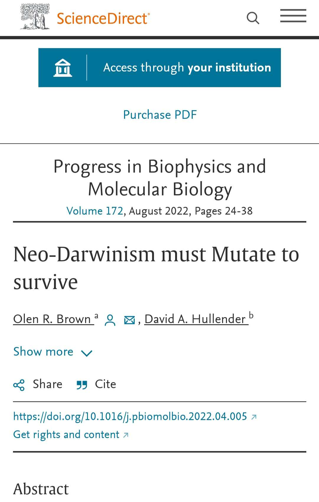
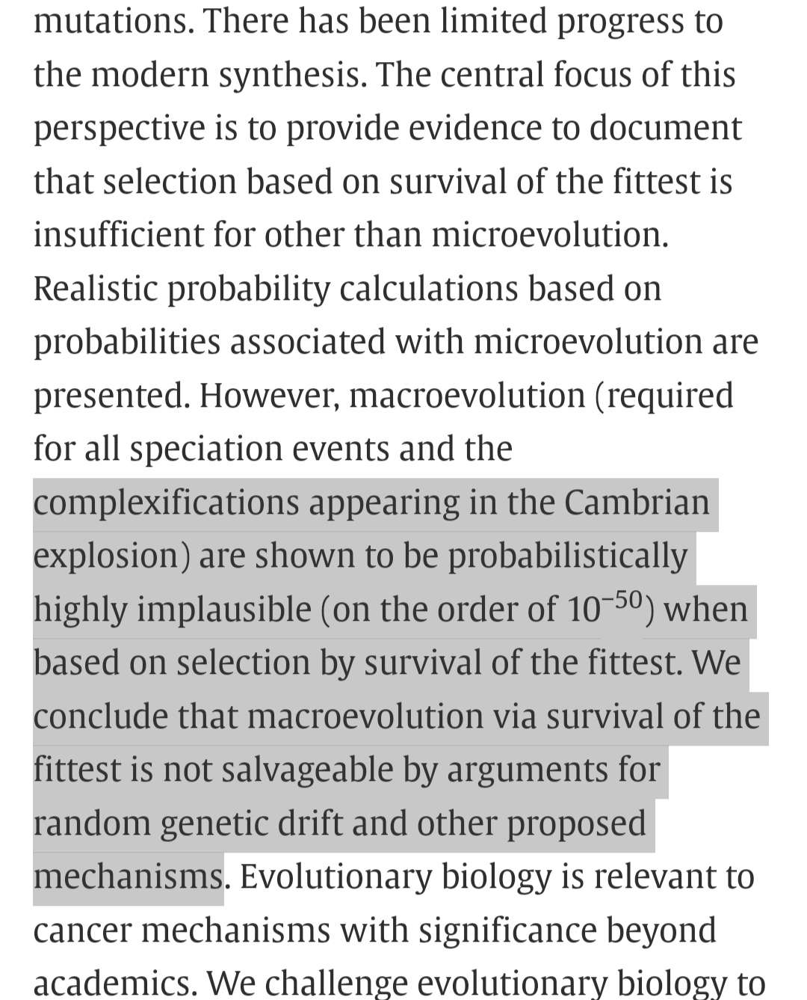

https://m.youtube.com/watch?v=rmRH80lj9UM&t=3050shttps://thethinkingmuslim.com/2021/10/20/islam-and-evolution-summary-and-review-of-dr-shoaib-maliks-book/https://www.academia.edu/44377917/Islam_and_Evolution_The_Curious_Case_of_David_Solomon_Jalajelhttps://asadullahali.com/2020/08/07/adam-is-no-myth/https://m.youtube.com/watch?v=-y98wy5MNrIhttps://m.youtube.com/watch?v=75P6O-EdM5k
In a nutshell, evolution in animals doesn’t contradict anything within Islam. With regards to human evolution all that says is that humans and apes have a common ancestor and their proof for that is the similarities found in apes and humans. This can be reconciled with Islam by saying that the reason why apes and humans are similar is because Allah decreed it to be that way and not that they have to have an ancestor. If Allah can make a divine exception for Jesus peace be upon him being born without a father and can create the she-camel of Thamud with no parents, then it’s not a stretch to say that the same thing can happen with Adam peace be upon him and Hawwa. Science doesn’t comment on God or any metaphysical, supernatural phenomena or miracles so no atheist can try to refute either human exceptionalism or Adamic exceptionalism using science since it’s a miracle claim
Today we are talking about evolution from Islamic perspective evolution contradict Islam from two sides
number one the mechanisms proposed to explain evolution this mechanisms contradicts the Islamic theology about the character of God Muslims believe that God is all knowing and wise so he does not make mistakes and does not waste his creation Allah says in the Quran chapter (32 / 7 ) that [ he is the one who created everything at the best form ] so we understand from this that his creation is at the best possible structure but in evolution at the modern proposed mechanisms there is a problem because some suggests that all this life came by blind randomness using random mutation and natural selection so basically it is completely blind process which results in big generations of disordered creatures who can't even survive and the natural selection come and eliminate all these creatures so this is one of the main problem between the proposed mechanisms and Islamic perspective of creation also in evolution some suggests that there is an idea of vestigial organs which means that humans or any other creatures have organs that lost their function through time and that proves that evolution is true from their perspective but in reality if we take evolution as only like an explanatory theory with no mechanism or any kind of accusation like the vestigial organ idea this concept of evolution does not contradict Islam.
now talking about the mechanisms that contradict Islam is that a problem for the Muslim the answer is no because to this day scientists disagree about the mechanism of evolution so for example scientists believe that Evolution comes by random mutation but in the recent scientific resources about the mutations and there nature they discovered that mutations are not random like some scientists claimed which destroys the core of the proposed mechanism
https://www.ucdavis.edu/food/news/study-challenges-evolutionary-theory-dna-mutations-are-random
add to that that the natural selection is a natural phenomena that humans observed before even knowing anything about biology the creature that's fails to adapt with the changes of the environment lose the game and die but can natural selection help in evolution now in recent paper published on the ncpi they suggest that the chance of natural selection to work on creatures and help in evolution in periods like the Cambrian explosion mathematically is 10 ^ 50 which is highly impossible so we understand that the main proposed mechanisms are not a problem for the Muslim because they are not accurate and there is scientific papers that disagree with them that's why we say that mechanisms are not problem for Muslims because they change with time and it doesn't matter if you disagree with them or agreed with them for example the most famous mechanism is near Darwinism there's a paper published lately under the title of ((( neo Darwinism most mutated to survive ))) which proves the point that we should not follow the proposed scientific explanation blindly
https://www.sciencedirect.com/science/article/abs/pii/S0079610722000347


Also you have the point of vestigial organs which suggests that for example humans have organs lost their function through time so they are useless which contradicts clearly the Quran now but those claims are not accurate the list of vestigial organs started by 85 Oregon then increase to reach almost 180 organ in the human body they even claimed that the endocrine glands which is one of the most important systems in the body is vestigial organs just because they didn't know there function and this list decrease true time by the new medical discoveries about the function of the human body and how to deal with it and for now they only use about five to six organs which has been refuted to
Now for the second contradiction which is Adam story which does not go aline with the human evolution in new Darwinism weather they proposed a mechanism or not because the main claim is that humans evolved from common ancestor between humans and chimpanzees but in Islamic theology Muslims believe that Allah created Adam and Eve separately they did not evolve so regardless the mechanism this is clear contradiction but the question is should Muslims worry about this contradiction the answer is no because scientists to this moment are not sure about the human ancestry to this moment with every archaeological discovery the human ancestors to become more complicated and harder to understand and the closer relations become further and more unlikely to be realistic we explain that in previous channel when we addressed all the proposed human ancestors in the archaeological field and we refuted them while using scientific papers proving that scientists does not agree at these fossils and logically if you at least eliminated five out of 10 then you made a big enough hole to destroy the claims which we did
A conclusion we understand now that Islam contradicts Evolution theory in only two sides proposed mechanisms and Adam and Eve story and in both cases it's not a problem for Muslims to worry about because none of them is proven in the scientific field as something that there is no doubt about and consistently changing by time and the new discoveries this is why Muslims should not disturb their faith with some new scientific theories because science change by time especially in the theoretical field because it's based upon speculations using uncompleted database and when you add a new information from new discoveries the old speculations will be changed to go aline with the new discoveries just like proved above so people should understand what to believe and what do just understand and not trust as an absolute fact for example we believe in scientific fact because they are based on empirical evidence but theories are based on speculations because their main function like Evolution is to explain things therefore Evolution is an explanatory theory not a practical thing because it's not based on empirical evidence it's only philosophical evidences like similarities and drawing lines between all creatures in the archaeological field eventually check out the other channels that explains more about evolution and the misconception that most people think about it for any further questions you can DM us
Wa salam alaikum .